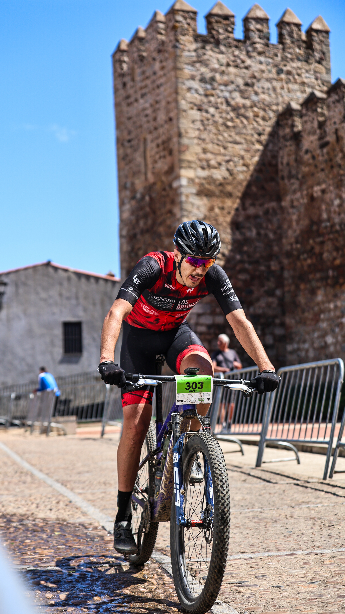
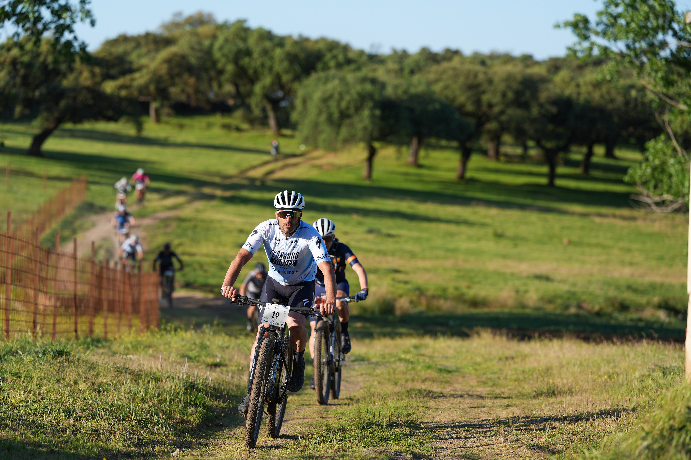

The Preeuropeo Templarios MTB Race took place in Jerez de los Caballeros, Extremadura, on Sunday 12 April 2026, with event coverage by the Image Media team. Included on the International UCI Calendar in the C2 XCM category, the race served as an official preparatory event for the 2027 European BTT Marathon Championship, which the town is set to host. The route built to a finish beneath the town's Templar Fortress, after a course organisers described as unfolding in three acts: challenging climbs, technical descents and a culminating series of steep ascents.
Riders chose between three distances: the absolute race of 93–94 kilometres with 2,000–2,400 metres of elevation gain, a Pro Trail circuit of 77 kilometres with over 2,000 metres of climbing, and a Pro Mini Trail circuit of 45 kilometres with more than 1,300 metres of elevation. More than 300 riders were expected on the start line. The event was organised by Club Ciclista Jerez de los Caballeros, with the Junta de Extremadura and the Ayuntamiento de Jerez de los Caballeros providing institutional backing, and counted toward both the Spanish BTT Marathon Cup (XCM) 2026 and the Extremadura XCM Open.

In the men's race, a leading trio broke clear early and had opened a gap of around four minutes by kilometre 22. Adrián Benedito (Scott-Montenevado) went on to win in 4:03'49", with Raúl Rodríguez (Extremadura-Ecopilas) second, roughly two minutes back, and Luis Pérez (Klimatiza-Orbea) third, more than three minutes off the pace.
Natalia Fischer (Extremadura-Ecopilas), a five-time Spanish champion, dominated the women's race from early on and crossed the line well clear of the field in 4:55'37". Corina Mesplet finished second, and María Reyes Murillo (Extremadura-Ecopilas), the fastest sub-23 rider, completed the podium in third.

The race doubled as final preparation for several of the field, with the Spanish XCM Championship following a week later in Paterna del Campo, Huelva. Organisers framed the event as a step toward putting Jerez de los Caballeros on the international cycling map ahead of the 2027 European Championship.
The Image Media coverage team comprised Eduardo Almeida, Luis Moreira and Fran Paulino.